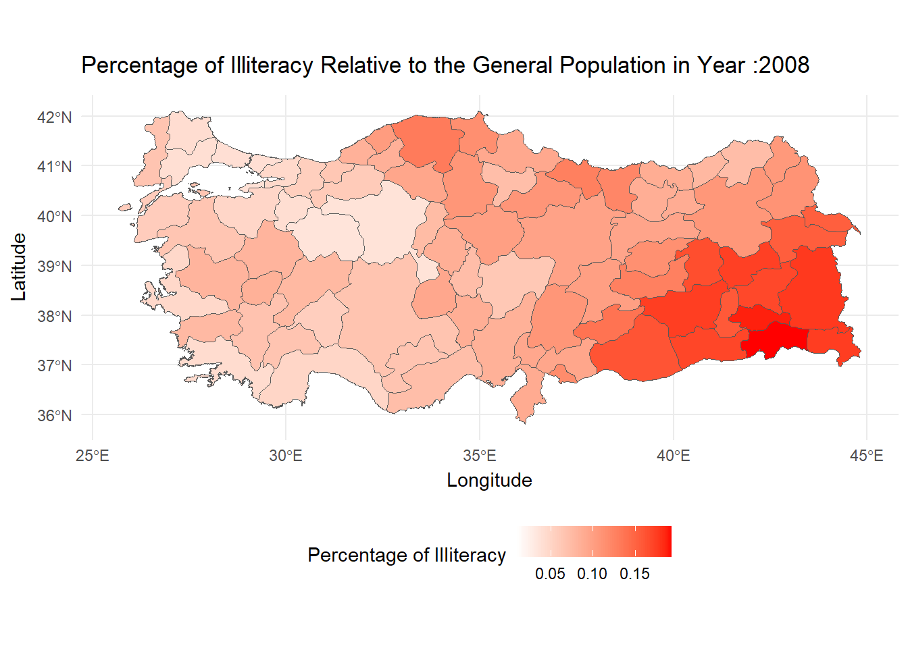

This dataset contains the annual distributions of educational attainment levels across Turkey’s 81 provinces from 2008 to 2023. For each province, it includes information on the total population, gender-specific population breakdowns (male and female), and population figures by different education levels (such as primary school, middle school, high school, university, and doctorate). Additionally, it provides geographic details like province codes and names.
Education Level Change Over the Years
Show the code
library(readxl)library(dplyr)library(tidyverse)library(ggplot2)#calling the datadata <- readxl::read_excel("EMU430-DATA.xls")#adjusting dataeducation_level_percentages <- data |>group_by(Year) |>summarize(illiteracy_percentage =sum(`General Illiterate Population`,na.rm =TRUE) /sum(`General Population`,na.rm =TRUE),literates_without_diploma_percentage =sum(`General Literates Without Diploma`,na.rm =TRUE) /sum(`General Population`,na.rm =TRUE),primary_education_and_school_percentage = (sum(`General Primary School Graduates`,na.rm =TRUE) +sum(`General Primary Education Graduates`,na.rm =TRUE)) /sum(`General Population`,na.rm =TRUE),lower_secondary_school_percentage =sum(`General Lower Secondary School Graduates`,na.rm =TRUE) /sum(`General Population`,na.rm =TRUE),upper_secondary_school_percentage =sum(`General Upper Secondary School Graduates`,na.rm =TRUE) /sum(`General Population`,na.rm =TRUE),universities_percentage =sum(`General Universities and Other Higher Educational Institutions Graduates`,na.rm =TRUE) /sum(`General Population`,na.rm =TRUE),master_doctorate_percentage = (sum(`General Master Graduates`,na.rm =TRUE) +sum(`General Doctorate Graduates`,na.rm =TRUE)) /sum(`General Population`,na.rm =TRUE),unknowns_percentage =sum(`General Unknown`,na.rm =TRUE) /sum(`General Population`,na.rm =TRUE) )education_level_percentages_long <- education_level_percentages |>pivot_longer(cols =c( illiteracy_percentage, literates_without_diploma_percentage, primary_education_and_school_percentage, lower_secondary_school_percentage, upper_secondary_school_percentage, universities_percentage, master_doctorate_percentage, unknowns_percentage ),names_to ="Variable",values_to ="Value" )#plotting datachange_in_education_levels_over_years_plot <-ggplot(education_level_percentages_long, aes(x = Year, y = Value *100, color = Variable)) +geom_line(size =1.2) +scale_color_manual(values =c("illiteracy_percentage"="green","literates_without_diploma_percentage"="black","primary_education_and_school_percentage"="blue","lower_secondary_school_percentage"="purple","upper_secondary_school_percentage"="yellow","universities_percentage"="cyan","master_doctorate_percentage"="orange","unknowns_percentage"="red" )) +labs(title ="Change in Education Levels Over the Years",x ="Year",y ="Percentage - %" ) +theme_minimal()
At first glance, the graph highlights that the majority of Turkey’s population consists of primary education graduates. Over the years, the data shows a decline in primary education, literates without a diploma, illiteracy, and unknown categories, while upper secondary school, university, lower secondary school, and master/doctorate categories have increased. This indicates that Turkey’s overall education level has significantly improved compared to 2008.
Illiterates
Illiterate Doldurcaz
Illiterates Percentage Change
Year
illiteracy_percentage
2008
7.674218
2009
7.182663
2010
5.784733
2011
4.730017
2012
4.108522
2013
3.862133
2014
3.823116
2015
3.750677
2016
3.479286
2017
3.237163
2018
3.006747
2019
2.735306
2020
2.556092
2021
2.458563
2022
2.384772

Show the code
library(readxl)library(dplyr)library(tidyverse)library(ggplot2)library(sf)library(gganimate)library(writexl)#Graph 1.1.1 : Illiterates Change Over the Years by Provinces -MAP{#Calling the map data turkey_map <-st_read("gadm41_TUR_1.json")#Adjusting the Map data turkey_map[3,11] <-"TR-03" turkey_map[13,11] <-"TR-74" turkey_map[17,11] <-"TR-12" turkey_map[22,11] <-"TR-17" turkey_map[23,11] <-"TR-18" turkey_map[24,11] <-"TR-19" turkey_map[27,11] <-"TR-81" turkey_map[29,11] <-"TR-23" turkey_map[35,11] <-"TR-29" turkey_map[38,11] <-"TR-76" turkey_map[42,11] <-"TR-46" turkey_map[43,11] <-"TR-78" turkey_map[49,11] <-"TR-71" turkey_map[54,11] <-"TR-43" turkey_map[81,11] <-"TR-67" turkey_map$ISO_1 <-as.numeric(gsub("TR-", "", turkey_map$ISO_1))names(turkey_map)[11] <-"Province Code"names(data)[2] <-"Province Code" data_with_map <-left_join(turkey_map,data,by ="Province Code")#Plotting the Datailliterateanim <-ggplot(data = data_with_map) +geom_sf(aes(fill =`General Illiterate Population`/`General Population`)) +labs(title ="Percentage of Illiteracy Relative to the General Population in Year :{frame_time}", x ="Longitude", y ="Latitude") +theme_minimal() +scale_fill_gradientn(name ="Percentage of Illiteracy",colors =c("white", "red"), ) +theme(legend.position ="bottom") +transition_time(as.integer(data_with_map$Year))anim_save("illiterateanim.gif", animation = illiterateanim)}
Reading layer `gadm41_TUR_1' from data source
`C:\Users\oonur\OneDrive\Belgeler\GitHub\emu430-fall2024-team-rtistler\gadm41_TUR_1.json'
using driver `GeoJSON'
Simple feature collection with 81 features and 11 fields
Geometry type: MULTIPOLYGON
Dimension: XY
Bounding box: xmin: 25.6651 ymin: 35.8154 xmax: 44.835 ymax: 42.1067
Geodetic CRS: WGS 84
Literates Without Diploma
LiteratesWODiploma Doldurcaz
Literates Without Diploma Percentage Change
Year
literates_without_diploma_percentage
2008
21.436988
2009
20.780019
2010
20.335370
2011
20.598381
2012
20.711368
2013
20.446354
2014
12.804912
2015
12.337626
2016
11.389498
2017
10.958339
2018
10.586433
2019
10.512603
2020
10.197285
2021
9.940048
2022
9.768801
Show the code
library(readxl)library(dplyr)library(tidyverse)library(ggplot2)library(sf)library(gganimate)library(writexl)#Graph 1.1.1 : Illiterates Change Over the Years by Provinces -MAP{#Plotting the Data LiteratesWODiplomaAnim <-ggplot(data = data_with_map) +geom_sf(aes(fill =`General Literates Without Diploma`/`General Population`)) +labs(title ="Percentage of Literates Without Diploma Relative to the General Population in Year :{frame_time}", x ="Longitude", y ="Latitude") +theme_minimal() +scale_fill_gradientn(name ="Percentage of Literates Without Diploma",colors =c("white", "red"), ) +theme(legend.position ="bottom") +transition_time(as.integer(data_with_map$Year))anim_save("LiteratesWODiplomaanim.gif", animation = LiteratesWODiplomaAnim)}
Primary Education Graduates
Primary Education Graduates Percentage Change
Year
primary_education_and_school_percentage
2008
38.43964
2009
39.90284
2010
40.11588
2011
40.74872
2012
41.08870
2013
40.75492
2014
43.64532
2015
41.34633
2016
39.64574
2017
39.11828
2018
37.09039
2019
31.41709
2020
29.99804
2021
29.05395
2022
28.44644
Show the code
library(readxl)library(dplyr)library(tidyverse)library(ggplot2)library(sf)library(gganimate)library(writexl)#Graph 1.1.1 : Illiterates Change Over the Years by Provinces -MAP{#Plotting the Data PE_GraduatesAnim <-ggplot(data = data_with_map) +geom_sf(aes(fill =(`General Primary School Graduates`+`General Primary Education Graduates`)/`General Population`)) +labs(title ="Percentage of Primary Education Graduates Relative to the General Population in Year :{frame_time}", x ="Longitude", y ="Latitude") +theme_minimal() +scale_fill_gradientn(name ="Percentage of Primary Education Graduates",colors =c("white", "yellow"), ) +theme(legend.position ="bottom") +transition_time(as.integer(data_with_map$Year))anim_save("PE_.gif", animation = PE_GraduatesAnim)}
Lower Secondary School Graduates
Lower Secondary School Graduates Percentage Change
Year
lower_secondary_school_percentage
2008
4.351955
2009
4.298165
2010
4.728626
2011
4.260392
2012
4.198746
2013
4.114778
2014
8.547578
2015
10.311791
2016
11.875475
2017
12.223273
2018
13.303357
2019
18.053969
2020
18.792913
2021
18.002598
2022
17.462246
Show the code
library(readxl)library(dplyr)library(tidyverse)library(ggplot2)library(sf)library(gganimate)library(writexl)#Graph 1.1.1 : Illiterates Change Over the Years by Provinces -MAP{#Plotting the Data LSSAnim <-ggplot(data = data_with_map) +geom_sf(aes(fill =`General Lower Secondary School Graduates`/`General Population`)) +labs(title ="Percentage of Lower Secondary School Graduates Relative to the General Population in Year :{frame_time}", x ="Longitude", y ="Latitude") +theme_minimal() +scale_fill_gradientn(name ="Percentage of Lower Secondary School Graduates",colors =c("white", "red"), ) +theme(legend.position ="bottom") +transition_time(as.integer(data_with_map$Year))anim_save("LSSAnim.gif", animation = LSSAnim)}
Upper Secondary School Graduates
Upper Secondary School Graduates Percentage Change
Year
upper_secondary_school_percentage
2008
15.52090
2009
15.95600
2010
17.19906
2011
17.72425
2012
17.82159
2013
17.58247
2014
18.09264
2015
18.42731
2016
19.22526
2017
19.34577
2018
20.22564
2019
20.83719
2020
21.05699
2021
22.04101
2022
22.77351
Show the code
library(readxl)library(dplyr)library(tidyverse)library(ggplot2)library(sf)library(gganimate)library(writexl)#Graph 1.1.1 : Illiterates Change Over the Years by Provinces -MAP{#Plotting the Data USS_GraduatesAnim <-ggplot(data = data_with_map) +geom_sf(aes(fill =(data_with_map$`General Upper Secondary School Graduates`/`General Population`))) +labs(title ="Percentage of Upper Secondary School Relative to the General Population in Year :{frame_time}", x ="Longitude", y ="Latitude") +theme_minimal() +scale_fill_gradientn(name ="Percentage of Upper Secondary School Graduates",colors =c("white", "yellow"), ) +theme(legend.position ="bottom") +transition_time(as.integer(data_with_map$Year))anim_save("USS.gif", animation = USS_GraduatesAnim)}
University Graduates
University Graduates Percentage Change
Year
universities_percentage
2008
5.462153
2009
6.642388
2010
6.904295
2011
8.197027
2012
8.711572
2013
9.757425
2014
10.691231
2015
11.830365
2016
12.504953
2017
12.808257
2018
13.343100
2019
13.856044
2020
14.692776
2021
15.361349
2022
15.884883
Show the code
library(readxl)library(dplyr)library(tidyverse)library(ggplot2)library(sf)library(gganimate)library(writexl)#Graph 1.1.1 : Illiterates Change Over the Years by Provinces -MAP{#Plotting the Data U_GraduatesAnim <-ggplot(data = data_with_map) +geom_sf(aes(fill =(data_with_map$`General Universities and Other Higher Educational Institutions Graduates`/`General Population`))) +labs(title ="Percentage of Upper Secondary School Relative to the General Population in Year :{frame_time}", x ="Longitude", y ="Latitude") +theme_minimal() +scale_fill_gradientn(name ="Percentage of University Graduates",colors =c("white", "green"), ) +theme(legend.position ="bottom") +transition_time(as.integer(data_with_map$Year))anim_save("U.gif", animation = U_GraduatesAnim)}
Master and Doctorate Graduates
Master or Doctorate Graduates Percentage Change
Year
master_doctorate_percentage
2008
0.4993491
2009
0.5761310
2010
0.7252804
2011
0.7811038
2012
0.7946093
2013
0.9993970
2014
1.0625382
2015
1.1481510
2016
1.1841683
2017
1.5158283
2018
1.6367018
2019
1.7491443
2020
1.7985298
2021
2.1497359
2022
2.2433263
Show the code
library(readxl)library(dplyr)library(tidyverse)library(ggplot2)library(sf)library(gganimate)library(writexl)#Graph 1.1.1 : Illiterates Change Over the Years by Provinces -MAP{#Plotting the Data MD_GraduatesAnim <-ggplot(data = data_with_map) +geom_sf(aes(fill =((data_with_map$`General Master Graduates`+ data_with_map$`General Doctorate Graduates`)/`General Population`))) +labs(title ="Percentage of Master or Doctorate Graduates Relative to the General Population in Year :{frame_time}", x ="Longitude", y ="Latitude") +theme_minimal() +scale_fill_gradientn(name ="Percentage of Master or Doctorate Graduates",colors =c("white", "green"), ) +theme(legend.position ="bottom") +transition_time(as.integer(data_with_map$Year))anim_save("MD.gif", animation = MD_GraduatesAnim)}
Unknowns
Unknowns Percentage Change
Year
master_doctorate_percentage
2008
0.4993491
2009
0.5761310
2010
0.7252804
2011
0.7811038
2012
0.7946093
2013
0.9993970
2014
1.0625382
2015
1.1481510
2016
1.1841683
2017
1.5158283
2018
1.6367018
2019
1.7491443
2020
1.7985298
2021
2.1497359
2022
2.2433263
Show the code
library(readxl)library(dplyr)library(tidyverse)library(ggplot2)library(sf)library(gganimate)library(writexl)#Graph 1.1.1 : Illiterates Change Over the Years by Provinces -MAP{#Plotting the Data UKGraduatesAnim <-ggplot(data = data_with_map) +geom_sf(aes(fill =(data_with_map$`General Unknown`/`General Population`))) +labs(title ="Percentage of Unknowns Relative to the General Population in Year :{frame_time}", x ="Longitude", y ="Latitude") +theme_minimal() +scale_fill_gradientn(name ="Percentage of Unknowns ",colors =c("white", "green"), ) +theme(legend.position ="bottom") +transition_time(as.integer(data_with_map$Year))anim_save("UK.gif", animation = UKGraduatesAnim)}